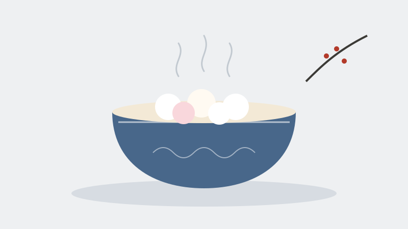

冬至

冬至这一天，太阳直射南回归线，北半球白昼最短、黑夜最长。过了冬至，白天会一天天变长，古人认为这是“阳气始生”的开始，所以非常重视这个节气。
民间有“冬至大如年”的说法。在古代，冬至曾被当作新年的开端，朝廷要举行隆重的祭天仪式，百姓也会穿新衣、互相拜贺。
天时人事日相催，
冬至阳生春又来。
—— 唐 · 杜甫《小至》
冬至阳生春又来。
—— 唐 · 杜甫《小至》
冬至习俗
- 北方吃饺子：“冬至不端饺子碗，冻掉耳朵没人管”，是北方流传很广的俗语。
- 南方吃汤圆：汤圆又叫“冬至团”，象征家人团圆、和和美美。
- 数九：从冬至开始，每九天为一“九”，共九个“九”，数完九九八十一天，春天就到了。
- 画九九消寒图：文人雅士用写字、画梅的方式记录数九的日子，打发漫长冬日。
九九消寒图
下面这九个字是常见的“写字消寒图”：每个字都是九画（繁体），每天描一笔，九九八十一天描完，冬天就过去了。把鼠标移到字上试试看。
亭前垂柳珍重待春風
亭前垂柳珍重待春風
一九二九不出手，三九四九冰上走，五九六九沿河看柳，七九河开，八九雁来，九九加一九，耕牛遍地走。—— 《九九歌》